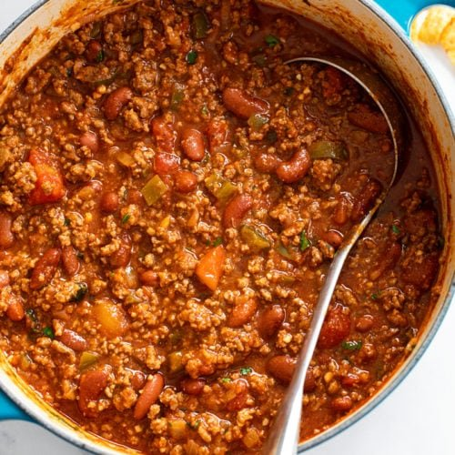

Chili

Description
This is the best chili recipe in the world!!! Nothing beats a nice bowl of chili anytime.
Ingredients
- 2 pounds ground beef
- 1 onion, finely chopped
- 3 garlic cloves, minced
- 1 (14.5 ounce) can diced tomatoes
- 2 (14.5 ounce) cans diced tomatoes with green chile peppers
- 1 (8 ounce) can tomato sauce
- 1 cup chicken stock
- 1 (15 ounce) can kidney beans
- 1 (15 ounce) can pinto beans
- 2 tablespoons chili powder
- 1 tablespoon ground cumin
- 2 tablespoons brown sugar
- 1 tablespoon salt
- 1 teaspoon ground black pepper
- hot pepper sauce to taste
Directions
- In a large stock pot lightly brown ground beef, and drain if needed.
- Add onion and garlic and cook until onion is translucent.
- Add tomatoes, diced tomatoes with chile peppers, tomato sauce, water, kidney beans, pinto beans, chili powder, cumin, sugar, salt, pepper and hot sauce. Simmer for 30 minutes and then serve.